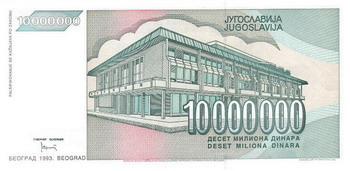

Beograd, 1993.
Već smo imali:
Beograd 1997. (akka Danguba)
1993. godine raspala se Čehoslovačka, Vaclav Havel postao je predsednik Češke, Klinton je zamenio Džordža Buša starijeg na mestu predsednika SAD, uništen je Stari most u Mostaru, 'Šindlerova lista' je dobio oskara za najbolji film.
A u Beogradu?
Evo nekoliko podataka iz teksta "Dnevna štampa kao izvor za proučavanje svakodnevice" (Đurđica Petrović), objavljenog u zborniku "Kulture u tranziciji".
U analizu su bili uključeni dnevni listovi tokom novembra 1993.
...Glavni grad zbog ledene kiše i poledice bio je skoro potpuno paralisan. U gradskom saobraćaju su nas obavestili da su čak 22 linije bile ukinute, da su mnoge skraćene, a led je okovao tramvaje koji juče skoro uopšte nisu funkcionisali...(Politika, 14. novembar)
...Cipele i čizme su mokre, a kako li je tek nogama? S krovova prete snežna obrušavanja. Nekad reprezentativne ulice, kao Knez Mihajlova, odaju sliku blatnog seoskog druma...(Borba, 18. novembar)
..."A sad gurajte", kaže vozač autobusa na liniji 38 na Banovom brdu, piše u Borbi 18. novembra. "Zaglibili smo se i morate malo da pogurate da bih nastavio sa vožnjom." Poslušni građani izlaze, staju u red i guraju. Najmanje ih je pedeset. 'Biće još bolje' obećavaju osmesi na reklamnim 'fotkama ' budućih lidera oblepljenih na svakoj drugoj banderi...
...Sindikat, vlada, i Privredna komora dogovorili su se 16. novembra da novi oktobarski minimalac, treći po redu, bude 50 miliona, čime je zamenjena dosadašnja najniža zarada od 10 miliona dinara....Osam dana kasnije ista upravljačka trojka se saglasila da najniža neto zarada za novembar bude 315 miliona dinara...
***
Ja se seaćam da skoro da i nisam izlazila iz stana i da sam (information maniac oduvek) kupovala nedeljne i mesečne novine posle nekoliko dana od kada se pojave, te su bile skoro dž.
A vi, čega se sećate?
 RSS feed
RSS feed
 sadržaji se objavljuju pod
sadržaji se objavljuju pod
Komentari
sećam se da sam svaki drugi-treći dan išao i vraćao se sa faksa peške (a živeo blizu Trošarine) - to je bilo bolje nego čekanje tramvaja
Ljube | 26.08.07 20:26
hm...srednja škola, ozbiljno se zaljubila, sećam se još i karirane košulje i crtanja u parkiću. Nije bilo love, a nama to nije predstavljalo problem.)
redsandra | 26.08.07 20:39
Sećam se da sam provela celu zimu igrajući lorum i slušajući ploče sa drugarima iz komšiluka.A leto na biciklu. I da je mama gledala vesti ceo dan, a ja sam imala simpatiju pa me vesti nisu zanimale. I bilo nam je super. Poslednji bezbrižni dani detinjstva...
elektrokuhinja | 27.08.07 05:21
Hm, čega se sećam. Tad!
Au.
Traženja Šelerovog hamera, kog nije bilo ni za leka. Skupljanje love da se kupe baš Štedlerovi lenjiri. Blejanje u dvorištu škole. Blejanje van dvorišta škole. Blejanje u svim situacijama.
Put u Grčku u najvećoj bedi zemlje. I prepričavanje kako su tamo radnje pune do vrha!Zaljubljenost. Pih, pa to bila smrtna ljubav tad :)
I đuskanje. Do iznemoglosti đuskanje. Za sve dve marke koliko koštalo sve dobro što može da ti se desi uveče u gradu.
etotako | 27.08.07 08:24
I ja se sećam izlazaka za 1-2 DM i prethodnog razmenjivanja po 10 DM kod švercera jer od ćaletove i mamine milionske plate nije ostajalo dovoljno za džeparac. U stvari me '93 i inflacija i sve ratne strahote (na žalost) nisu mnogo pogadjale jer sam bila suviše mlada, neobaveštena i zaljubljena. Sećam se mojih najboljih drugarica i kako smo se spremale za kontrolne zadatke uz plamen sveće i večeru koja se sastojala od čaja, hleba (koji je moja mama svakog dana mesila) i džema od kajsija. Sećam se fenomenalne muzike koja se tada slušala i kako nismo znali šta je turbo folk.
Maja | 27.08.07 15:08
Ja se secam da mi je to bila prva godina na fakultetu pa mi je sve bilo uzbudljivo i zanimljivo, a onda je dosla druga polovina te godine pa mi je bilo bas grozno a opet nekako lepo. Go figure.
Feisty | 27.08.07 17:37
Prva jesen studiranja, izlasci, otkrivanje Beograda nocu, sve to bez kinte,a bilo je zanimljivo. Cini mi se da su ljudi tada bili mnogo sveziji nego sada, valjda zato sto je sranje trajalo tek nekoliko godina.
kiko | 27.08.07 20:17
to je vreme metalnih kaiševa i onih farmerki sa dve crte sa strane, sad nose odela sa onim uzdužnim štraftama :)
oki | 27.08.07 21:37
Preselio sam se u Bulevar Lenjina, takodje isao peske do faksa i sa zanimanjem pratio vodostaj Save.
ubipacijentic | 29.08.07 08:13